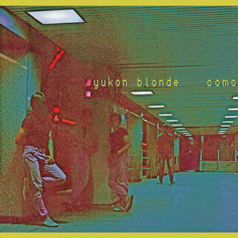

- avindaleDreamer 4.51
- KaguShadow Of The Wind 3.53
- dAVID sTRANGEAztec Corn 3.29
- LuckyMe RecordsHow To Dress Well - Tomb For Anatole 3.00
- Andrew KeoghanBetter Company 3.09
- NickHakimI Don't Know 4.59
- littlesmokervaDecember head (demo) 3.09
- MarzhattanBe Your Friend 2.25
- shuraShura - Touch 3.34
- GalimatiasAlina Baraz & Galimatias - Pretty Thoughts 3.31
- Samm HenshawOnly Wanna Be With You 3.00
- BRAINFEEDERTaylor McFerrin - Already There (feat. Robert Glasper and Thundercat) 3.00
- Alice Phoebe Loufiery heart, fiery mind. 3.00
- Kevin GarrettColoring 3.40
- HowardMusicMoney Can't Buy 3.22
- FazerdazeSomethink 3.08
- Jack GarrattThe Love You're Given 5.00
- CATCHING FLIESQuiet Nights (Free DL) 3.37
- Jodie GoffeHe Will Be Young 4.17
- Sub PopFather John Misty - Bored In The Usa 4.22
- Novo AmorCold 4.23
- José GonzálezEvery Age 3.11
- HowardMusicSong About Something 3.43
- KindnessThis Is Not About Us 3.20
- 80N7Spring King - Not Me, Not Now 3.34
- Tei ShiSee Me 4.32
- NickHakimCold 3.50
- NickHakimPour Another 5.51
- Suicide Squeeze RecordsWe Did It All Wrong by Kevin Morby 4.47
- WOODSISTKEVIN MORBY - Parade 5.25
- Brick Lane RecordsSo Bari by Benjamin Verdoes 3.10
- jacphouLayer Cake - Chapstick Island 2.28
- Dukes of ChutneyDomino 3.50
- JagjaguwarAngel Olsen - "All Right Now" 2.59
- Father John MistyChateau Lobby #4 (in C for Two Virgins) 2.50
- Dr. DulocOde to Flats 2.31
- Nettwerk Music GroupFrazey Ford - September Fields 3.27
- niiaBODY - Niia x The Range 4.21
- ewgarrisJames Blake - A Case of You 2.54
- Small HousesStaggers and Rise 3.59
- The Outdoor TypeAre You Happy 4.12
- Ian EwingMKE To CHI 3.52
- SAFIAJames Vincent McMorrow - Cavalier (SAFIA Cover) 4.34
- We Are The WestRegards 6.08
- Joey pecoraroDon't Sleep On Me 3.44
- Polyvinyl Recordsof Montreal - Empyrean Abattoir 4.32
- Our Man In BerlinThe Run Around 3.45
- Company Record LabelKeath Mead - Polite Refusal 4.08
- Le TournedisqueLe Tournedisque | Tournemix XIII 1.02.43
- thirtytigersSturgill Simpson - Turtles All The Way Down 3.08
- Solo WoodsLong Ways 3.39
- Adrianne LenkerSteamboat 2.41
- Aerial Eastkeeping up appearances 3.24
- James Fauntleroy10 You Can Get It 2.12
- indieshuffle.comJosé González - "Waterfalls" (TLC Cover) 2.43
- Gabriel Garzón-MontanoPour Maman 4.54
- Django DjangoFirst Light 4.48
- BURGER RECORDSCotillon - Left Bank 1.54
- HowardMusicFalling 2.38
- Street JoySame As Me 3.54
- WOODSISTSIMON JOYNER - You Got Under My Skin 3.38
- TURTLE GIANTGolden Summer 3.45
- José GonzálezLeaf Off / The Cave 4.53
- Them 9'sDreams 3.04
- Louis The ChildOh Wonder - Body Gold (Louis The Child Remix) 3.24
- Mint RecordsFaith Healer - Again 2.56
- Easy Sound Recording Co.Vetiver - Current Carry 3.54
- Polyvinyl RecordsSonny & The Sunsets - The Application 4.36
- Samm HenshawBest Song Ever 3.57
- Carpark RecordsToro Y Moi - Empty Nesters 3.43
- western.vinylKaitlyn Aurelia Smith - Careen 3.28
- Bop EnglishDani's Blues (It Was Beyond Our Control) 3.14
- GospelsSleepwalkers 4.18
- Barsuk RecordsChris Staples "Dark Side Of The Moon" (from American Soft) 3.27
- Sacred Bones RecordsMoon Duo - Slow Down Low 5.34
- Jens KurossSteadier 3.55
- DEEK RecordingsLaura Groves - Committed Language 4.00
- MrSuicideSheepNick Leng - Inside Your Mind (feat. Carmody) 4.23
- DAODAPacific 4.05
- The A&R DepartmentLOST WOODS - Ancient Psychic Tandem War Elephant 4.14
- BURGER RECORDSDanny James Etc. - Tight Lipped 4.43
- Ainslie Wills MusicDrive 5.04
- BURGER RECORDSBRGR016 King Tuff - Animal 2.24
- Good Luck SpacemanOso/Luna 5.40
- JagjaguwarUnknown Mortal Orchestra - "Multi-Love" 4.10
- BURGER RECORDSBRGR015 Fever B - Pop Punk Love 3.00
- WOODSISTJohn Andrews & The Yawns - Pennsylvania 4.06
- Tennis SystemHere We Go 4.28
- Fade In Mona LisaGreen Carnations 3.01
- Indoors OutdoorsThe Districts - Hounds 3.41
- Matt TurnerThe Pizazz - Ocean Liner 3.30
- Alex BureyAlex Burey - "Amen" 2.44
- Alex BureyAlex Burey - "Dome Creed" 1.50
- Empty Cellar RecordsCool Ghouls - What A Dream I Had 4.04
- OceaánNeed U / This Woman's Work - Feat. Låpsley (Live at Maida Vale Studios) 3.29
- BigSpaceStudiosSOAK - Sea creatures 3.27
- BRONCHOIt's On 2.35
- Spring KingCity 3.22
- BURGER RECORDSMichael Rault - Nothing Means Nothing 2.56
- BURGER RECORDSMichael Rault - Still Not Sad 2.32
- JagjaguwarWolf People - "October Fires" 4.19
- dogusbitusGeorgia Souls 3.44
- Beech ComaLou E - Just One Thing 3.01
- Jesse-DavidsonLaika 3.44
- turntocrimeSunday's Cool 4.27
- Lupa JWaiting For Her 4.21
- handsome erican unbearable feeling of being 3.20
- WOODSISTSIMON JOYNER Nostalgia Blues 7.14
- NevadoGROUNDERS - Secret Friend 3.29
- SwimmBeverly Hells 4.14
- Ninja TuneDorian Concept - 'Ann River, Mn' (Bibio Remix) 4.00
- CrepesStages of Fear 3.25
- MergeRecordsTwerps "I Don't Mind" 5.29
- Diamond RugsVoodoo Doll 3.10
- Diamond RugsBlame 2.13
- Mini MansionsAny Emotions (with Brian Wilson) 3.15
- Dead OceansRyley Walker - "Sweet Satisfaction" 6.23
- boxedinAll Your Love Is Gone 5.10
- Aero FlynnAero Flynn - Crisp 3.59
- Indoors OutdoorsBIGCOLOUR - Manifest Ecstasy 2.36
- Indoors OutdoorsBIGCOLOUR - I Hope No One Wants To Sleep With Me Tonight 2.48
- Ξdo LeeBlack Coffee 2.41
- JUCELOVEJUCE - I Feel For You (Chaka Khan Cover) 3.02
- Easy Sound Recording Co.Vetiver - "Loose Ends" 3.28
- helvetiamusicHELVETIA - RyBro 2.44
- PANTHER MARTINFriar Tuck 4.20
- Bella UnionEzra Furman - Restless Year 2.25
- Carpark RecordsToro Y Moi - Buffalo 3.18
- Paradise of BachelorsSteve Gunn - Way Out Weather: "Way Out Weather" 6.17
- MergeRecordsWill Butler "Anna" 3.53
- FilterFreeRodeoDo I Win? 2.24
- BURGER RECORDSBRGR030 Danny James Etc. - Tight Lipped 4.43
- Pop & ObachanDry Land 3.43
- BOUQUETCome To Your House 2.52
- PLANCHA RECORDSFoxes in Fiction - Flashing Lights Have Ended Now (Japanese Bonus Track) 5.00
- Just SZA05 PRAY (Prod. Felix Snow) 3.18
- Bop EnglishSentimental Wilderness 3.29
- FORINTTrack-01 4.16
- DawnRaidMusicAaradhna - I'm Not The Same 3.21
- Dirty Laundry Music Inc.Twin Steps - Junkie Song 3.06
- WOODSISTJohn Andrews & The Yawns - I'll Go To Your Funeral (If You Go To Mine) 2.50
- Company Record LabelKeath Mead - Grow Up 3.42
- CASCINEYumi Zouma - Song For Zoe & Gwen 4.05
- MergeRecordsMikal Cronin "ii) Gold" 3.43
- lolipoprecordsWINTER - "Someone Like You" 3.13
- Field GuidesLisa Loeb Probably Never Pierced Her Ears 1.59
- The Midnight HollowNostalgia 3.28
- OKAY-KAYADamn, Gravity 2.42
- GengahrShe's A Witch 2.41
- El Segell del PrimaveraBad Luck 3.14
- Astronauts, etc.I Know 4.13
- Morning HarveySmith Street Swap Meet 3.23
- Tei ShiGo Slow 3.32
- WilsenWilsen - "Magnolia" 4.08
- WilsenWilsen - "Oblivion" (Grimes cover) 4.15
- Freemount RecordsTalkie Walkie - Banshee 2.38
- Stones Throw RecordsSilk Rhodes - Pains 3.11
- gorgeous bullyCouldn't Keep It To Myself 3.10
- MistletoneToro Y Moi - Run Baby Run 2.45
- JUNGLE FIRESHOLD 4.29
- BRAINFEEDERTaylor McFerrin - The Antidote (feat. Nai Palm) 3.05
- Tamu MassifJejune / Selene 4.46
- Spring KingThey're Coming After You 3.48
- Fraser A. GormanBook Of Love 3.45
- FallBreakRecordsAttic Fowler - Bradford Beach (Official Single) 4.03
- BURGER RECORDSHinds - Trippy Gum 4.32
- CrepesCold Summers 2.54
- azul togawhen are you going to 3.04
- Tom MischBrazilian Love 2.58
- FallBreakRecordsAttic Fowler - Quit Smoking (Official Single) 3.41
- asthmatickittySufjan Stevens, "Should Have Known Better" 5.05
- Day WaveDay Wave - Drag 3.08
- Dead OceansThe Tallest Man On Earth - "Love is All" 4.15
- Twin Peaks DudesTwin Peaks - Got Your Money 3.36
- All We AreUtmost Good 3.01
- ELWDDreamwaves 24.20
- i-DPremiere: Samm Henshaw - Redemption 4.09
- BEACHTAPEMaybe 2.59
- San FeLove in the Dark 2.23
- Post-EchoDear Blanca - Noma 3.10
- BURGER RECORDSMichael Rault - Lovers Lie 3.08
- danieldowningCrushed Again 3.00
- The Pigskin GodheadLUNAR SAMPLES 3.09
- Joey pecoraroWarm 2.10
- Ξdo LeeIota & Edo Lee - Astro Blues 1.48
- Adrian RecordingsYAST - When You're Around 2.51
- Fat PossumAmerican Wrestlers - There's No One Crying Over Me Either 4.52
- Flamingo JonesSkinny D.I.P. 3.24
- Young Hunting [LA]Young Hunting - Every Living Thing 3.06
- Penicillin BabyStick It Out 3.33
- martzattackThe Tartans= West Of La Brea 2.09
- Miya FolickI Got Drunk 3.49
- Team Love RecordsThe Berg Sans Nipple-Pink Rays Sugar 4.22
- Trails and WaysSay You Will 2.54
- Yukon BlondeComo 3.35
- LEISUREGot It Bad 3.27
- Section Sign RecordsWren Kitz - 02 Hall Of Lame 6.24
- Analogue Enhanced Digital_LINDEN: Rest and be Thankful 2.41
- Adna.Living 4.41
- XLR8RCafe Lanai - Lanai 5.00
- Keenan O'MearaMania 4.29
- ChelouAneurysm (Free DL) 3.14
- Moses SumneySeeds 3.54
- Astronauts, etc.No Justice 3.49
- Bells AtlasBling 4.05
- Two Year VacationCanned Heat 3.27
- Admiral FallowBuilding As Foreign 5.08
- NevadoThe Wooden Sky - Our Hearts Were Young 4.01
- FavelaFuture Visions 4.14
- capturedtracksMac Demarco // The Way You'd Love Her 2.36
- Girlpoolyour heart 2.52
- BURGER RECORDSLaure Briard - Égoîste 2.37
- BURGER RECORDSPart Time - Pussy Of My Dreams 3.00
- BURGER RECORDSBRGR052 Conspiracy of Owls - A Silver Song 6.07
- BURGER RECORDSJaill - Got An F 3.25
- BURGER RECORDSMitchell Adam Johnson - Anyone Else 2.50
- BURGER RECORDSMitchell Adam Johnson - Round & Around 1.47
- BURGER RECORDSBRGR050 The Go - In The Dark 4.45
- HINDSDavey Crockett (Thee Headcoats COVER) 2.56
- Katorga WorksSheer Mag - Button Up 3.02
- Joyful Noise RecordingsThee Oh Sees - The Ceiling 2.25
- Slumberland RecordsExpert Alterations - Midnight Garden 2.48
- Al BairreAl Bairre - Bungalow 2.47
- Hein CooperThe Art Of Escape 3.47
- 36? (your favorite band)Beauty/Strong - The Man at the Door 2.41
- The Wet SecretsSunshine 4.30
- AOSOONSame Difference 3.46
- AQUILOI Gave It All 3.51
- ChelouThe Quiet (Preview) 2.25
- FeveristCriminal Mastermind 3.21
- Heat BandRooms 2.37
- Heat BandThe Natural World 2.41
- Leif EriksonLOOKING FOR SIGNS 4.54
- DouglasFirs12 When The Day Is Over (Bonus Track) 3.30
- the gloomiesGROVES 3.18
- the gloomiesLSD 2.52
- AIYAIf I Could Get 3.42
- Tender Loving EmpireWillis Earl Beal - Flying So Low 4.47
- OceaánEverything Everything - Regret (Oceaán Remix) 4.01
- Hymn de LuneIn Your Head 4.04
- Stamp The WaxPremiere: Tamu Massif - A Fate Much Worse 2.59
- TheMagicLanternHarvest Moon 4.45
- Tropic of YouthPoa Kichizi Kama Ndizi - Single Version 3.41
- Ark Xavia'99 Days' 3.53
- Lianne La HavasUnstoppable 5.28
- KlangstofHostage 5.20
- HerQuite Like 4.04
- Vicktor TaiwòFeathers & Wax 4.08
- erynallenkaneEryn Allen Kane - Have Mercy 4.40
- FOXTROTTDriven 3.18
- Gia MargaretBabies 2.54
- Moods (Official)Moods x SIAM - Organic 3.24
- __Ruck P__Hands Down 3.49
- GARRENWanna Be There 3.44
- Sacred Bones RecordsMoon Duo - "Wilding" 4.58
- Indoors OutdoorsSHEER MAG - FAN THE FLAMES 3.44
- Garbanotas BosistasPlaces, Planes And Trains 4.46
- LeyyaSuperego 3.04
- BrasstracksCorduroy 3.17
- FutureWeird Inside - Hopeless 2.20
- weird outsiderobert glasper & emeli sande - somebody else (weird inside remix) 2.27
- Elliot MossBest Light 5.24
- CLUB KURULoot 3.28
- WaterstriderPassing Ships 4.05
- Of Embla"Puppet" 4.17
- NaoNao - Apple Cherry 3.42
- Pigeons & PlanesCE - "Mudra" 5.09
- FAMILY FRIENDSOn Your Mind 3.31
- Rainy Day WomenAre You Coming Home? 2.43
- BOYS.Set Me On Fire 3.03
- BUOYDon't Want To See You 4.08
- BLØSHKeep Your Tongue 3.13
- CASCINEThe Legends - Keep Him 3.05
- lucaBest On ft. Tei Shi 2.45
- Tough LoveFun Adults - Acacia 3.49
- Fun Adults'Til Sleep 4.11
- BRAINFEEDERThundercat - 'Them Changes' 3.07
- JUMPSWIM ❀Fall Out Of Love w/ Ninna Lundberg 2.48
- Astronauts, etc.Eye to Eye 3.34
- Jordan RakeiJordan Rakei x Kiran Kai - Maya 3.01
- Blood OrangeDo You See My Skin Through The Flames? 10.52
- Sub PopBeach House - Sparks 5.21
- FavelaBlinker 4.17
- siannaplavinCruel 3.35
- Leisure SuiteSweet Gin 4.32
- lontaliuscomfortable 2.16
- Toro y MoiPitch Black Ft. Rome Fortune 2.50
- Secret Songsshh029: swim good x Merival - since u asked 2.39
- Ta-kuDown For You feat. Alina Baraz 3.36
- Delicieuse MusiquePREMIERE : Gene Lawrence - Feel Like Making Love 3.30
- Banff MusicAll Again (Future Self EP) 3.34
- Valley Queen Official02 Make You Feel 4.03
- Crooked ColoursCome Down 3.34
- Crooked ColoursIn Your Bones 3.33
- Good MorningA Vessel 3.19
- Solitaire RecordingsGood Morning - Warned You 2.13
- Sunbeam Sound MachineWandering, I 2.59
- Miya FolickStrange Darling 3.43
- Workman SongCrazy Girl 4.41
- The HarpoonsCan We Work This Out 3.42
- PaperhausmusicSo Slow 3.05
- Reuben HollebonClutch 2.32
- RAVEENSoftly To Air 2.48
- newbridgeAfrodelic 1.52
- FurnsssManic Pixie Dream Girl 4.54
- nancypants08 Halley's Comet 2.58
- kid flicksThe Spirits' Theme 3.45
- NONIEListen 3.18
- Heavy HeartDaisy Chain 3.49
- Heavy HeartShell 3.41
- Anna B SavageIII 3.31
- THREE BONESLove Is The Only Way 4.54
- THREE BONESHold On To Ya 2.34